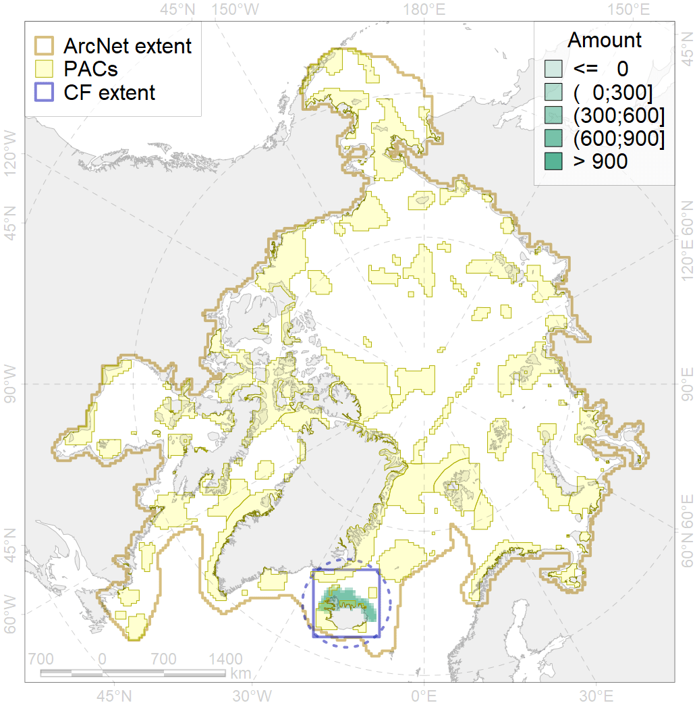
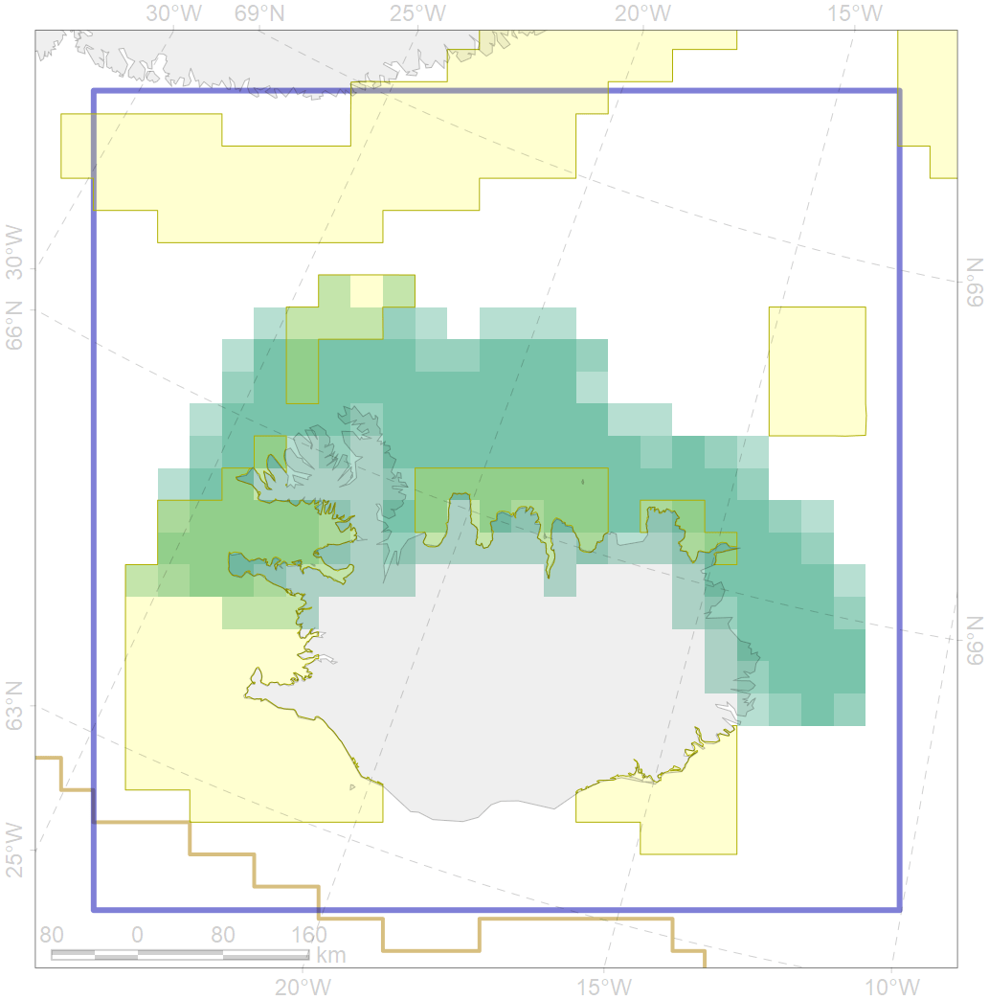

4086

| CF code | 4086 |
| CF name | Fish zoogeography, Arctic Region, Subarctic Transitional-Atlantic Province, Iceland District |
| Time Period | 2019 |
| Source(s) | Chernova, produced for this project |
| Seasonality | Jan-Dec |
| Depth Horizon | |
| Methodology | expert opinion based on summarised data of trawl surveys and multiple publications |
| Use Restrictions | unknown |
| Author Name | N. Chernova |
| Notes | |
| Scenario’s Target | 0.2 |
| Target Achievement | 0.328 (Scenario: 164.1%) |
| PAC | Share of the Total Amount within the PAC | Share of the Target Achievement for the ArcNet | PAC’s Contribution to the Target Achievement |
|---|---|---|---|
| 37 | 2.9%4.3% | 7.5%9.7% | 4.6%5.9% |
| 38 | 12.1%14.5% | 49.8%56.7% | 30.4%34.6% |
| 40 | 1.7%2.5% | 6.1%8.9% | 3.7%5.4% |
| 41 | 9.0%10.7% | 27.3%31.0% | 16.6%18.9% |
| inner | 25.6%31.9% | 90.7%106.3% | 55.3%64.8% |
| outer | 74.4%86.4% | 73.4%118.0% | 44.7%71.9% |
| † supplement values are for area consistence whereas principal values are for Accenter compatible gridded stats |